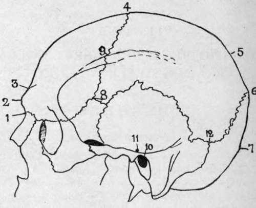

Section I. Head And Neck, Vertebral Column, Brain And Spinal Cord. The Head. Surface Anatomy
Description
This section is from the book "Surgical Anatomy", by John A. C. MacEwen. Also available from Amazon: Surgical Anatomy.
Section I. Head And Neck, Vertebral Column, Brain And Spinal Cord. The Head. Surface Anatomy
The head is generally not symmetrical, the left half being the larger. In some cases this asymmetry is due to pressure at birth, rickets, or syphilis, and is very marked, the head presenting a lop-sided appearance. The relation of length to breadth of the skull varies considerably in different races, the term dolichocephalic denoting an elongated type, and br achy cephalic one which is more rounded. The cranial capacity likewise varies, being small [microcephalic) in African Bushmen, and large (megacephalic) in more civilized races. A microcephalic condition is met with pathologically associated with cretinoid idiocy, while in hydrocephalus the head is often very large.
It must not be concluded that the shape of the head is always an index of the cranial development, and this is particularly the case in the frontal region, where the ' development ' depends largely upon the presence and size of the frontal sinuses. A high and prominent forehead is frequently associated with rickets, in which the frontal and parietal eminences may also be enlarged owing to new bone formation. Inherited syphilis also produces overgrowths of bone round the anterior fontanelle, constituting what are known as Parrot's nodes.
The sagittal suture is that formed by the union of the superior margins of the parietal bones. It can generally be detected by palpation running antero-posteriorly. By a sagittal section is meant one running antero-posteriorly.
The junction of the parietals anteriorly with the frontal bones forms the coronal suture, which can also generally be palpated, running across the vertex from side to side. By a coronal section is meant one running at right angles to the sagittal.
The point at which coronal and sagittal sutures meet is called the bregma, and can be made out on careful palpation. It can be indicated approximately by taking the mid point of a line drawn across the vertex from the centre of one external auditory meatus to the other.
Posteriorly the parietals form with the occipital bone the lambdoidal suture, the apex of which is called the lambda. It is generally palpable, but its exact position may be difficult to define, owing to the frequent presence of a large Wormian bone at this point, called the cs cpactal or preinterparietal bone. The lambda lies about 2½ inches above the external occipital protuberance, and indicates the position of the posterior fontanelle. When the os epactal is present, its lower border indicates fairly exactly the most prominent part of the skull posteriorly.
Fig. 1.-Cranial Points.
1. | Nasion. | 5 | Obelion. | 9. Stephanion. |
2 | Glabella. | 6. | Lambda. | 10. Meatal Point. |
3 | Ophyron. | 7 | Inion. | 11. Pre-auricular point. |
4 | Bregma. | 8. | Pterion. | 12. Asterion. |
The external occipital protuberance is called the inion, and it should be noted that it does not form the most prominent point of the skull posteriorly, but lies distinctly below that point.
The middle of the fronto-nasal suture is called the nasion, and is easily located at the root of the nose. The point of articulation of the anteroinferior angle of the parietal with the sphenoid is called the pterion, and is indicated by taking a point 1¼ inches behind and ¼ inch above the most prominent point of the external angular process of the frontal. The frontal and temporal bones also articulate here, the sutures forming together a rough capital H. The meatal or auricular point is the centre of the external auditory meatus. The preauricular point is situated immediately above the zygoma and in front of the tragus.
The point of junction of parietal, mastoid, and occipital bones is called the asterion, and lies 1½ inches behind and1inch above the auricular point.
The glabella is a point midway between the two superciliary ridges, and the vertex is the summit of the cranial vault-a variable point.
In addition to the normal cranial sutures, a faetal suture may persist, and cause error in diagnosis. The most common of these is one extending up from the foramen magnum toward the external occipital protuberance, which normally is closed by the fifth month of intra-uterine life. This is the most common site of cranial meningocele, or protrusion of the cerebral membranes, the next most common position being through the fronto-nasal suture. In addition to the occipital suture mentioned, which may extend through the whole length of the occiput, the expanded portion of the occiput is divided into four pieces at birth by two lateral fissures running into the protuberance. These may persist and be mistaken for fractures, and it is well to remember that the portion of occiput above these fissures is developed from membrane, and the portion below from cartilage. Fissures may also persist in the posterior portions of the parietals (the small portion of the parietal bone so separated being called an interparietal bone), and if bilateral and joined may present a sagittal fontanelle.
Of much importance to the surgeon is the power of locating the principal cerebral centres and bloodvessels by means of external measurements. A simple method of locating the Rolandic fissure, around which the chief motor areas are grouped, is to take a point ½ inch behind the mid-point between nasion and inion, and from it draw a line down and forwards at an angle of 67½ degrees (three-quarters of a right angle) till it meets the Sylvian fissure. The position of the Sylvian fissure is indicated by drawing a line upwards and backwards from the pterion to a point ¾ inch below the parietal eminence, and the parietal eminence lies at the junction of the upper and middle thirds of a line drawn from a point ½ inch behind the mid-point between nasion and inion to the auricular point. The short ascending limb of the Sylvian fissure is indicated by a line ¾ inch long, running upwards and slightly forwards from the pterion. A line drawn from the nasion to the inion gives the position of the longitudinal fissure of the brain. The longitudinal sinus runs along this line, slightly to the right side. The lateral sinus is represented by a line drawn from a point ½ inch above the inion to the asterion. At this point the lateral sinus turns rather sharply down and forwards, forming the commencement of the sigmoid sinus, which is very variable in its exact position. In some cases the knee of the sinus comes to within ¼ inch of the external osseous meatus, while in others it may be ¾ inch behind it.
The trunk of the middle meningeal artery may be reached at a point 1½ inches behind the external angular process of the frontal, and ¾ inch above the zygoma, while its anterior branch is reached at a point ¾ inch higher up.
The supra-orbital notch lies at the junction of the middle and inner thirds of the supra-orbital ridge, and is generally easily palpable. A line drawn down and outwards from it to the interval between the two bicuspid teeth of both jaws passes through the infra-orbital foramen, which is situated 1 inch below the lower margin of the orbit, and, if prolonged, indicate*- the position of the mental foramen, situated midway between the upper and lower borders of the ramus of the lower jaw. The position of the point of entrance of the inferior dental nerve into its canal on the inner side of the ramus of the lower jaw is got by taking the mid-point between zygoma and inferior border of lower jaw, and the mid point between anterior and posterior borders of the ascending ramus.
The facial artery crosses the lower jaw about ½ inch in front of the angle, at which point there is generally a slight depression in the bone, which forms the best guide to the vessel.
Continue to:
- prev: Preface
- Table of Contents
- next: The Cranium